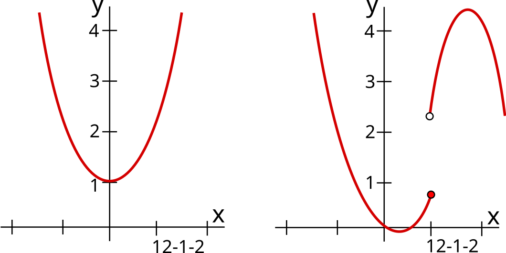

find the contest here
The scope of this contest was the Metropolis liquidity book vaults. Since this system is completely untied to other kinds of vaults made by metropolis, we assume its a whole new project. The vaults here are smart contracts that manage liquidity into DLMM pools, the pair pools made by Trader Joe's. You can think of an DLMM as almost the same as an Uniswap V3 pool, except the fee composition is different.
When adding liquidity to a DLMM, if you add it to the current price point, with an unbalanced amount of funds (more X than Y), you are charged a composition fee. 25% of it goes to the protocol, 75% to the previous LPs. The amount of fees to be paid depends both on how much imbalance is added and the size of funds currently available in the tick. So to maximize the amount of fees paid, you have to provide liquidity to one asset only.
A concern the sponsor had was to make sure there would have no faulty points, as many vault users were vibe coded bots (back in early 25 these bots were really trash).
If we assume the operator is malicious, there is a complex series of calls he can do in order to steal all the funds in the vault. First, they provide LP between 2 price bins, enough to be a majority LP in both bins. Then the attack unfolds as follows:

The key insight is that the `rebalance()` function has no cooldown. The operator can call it multiple times in the same block, triggering composition fees each time.
To quantify the damage, the PoC demonstrates a vault with 100k USD in user deposits (50k USDC + equivalent AVAX). The operator collects approximately 150 USDC per cycle, representing 0.15% of vault funds.
At this rate:

The vulnerability exists because:
The recommended fix is simple: add a cooldown to the `rebalance()` function. For example, enforce that rebalances can only happen once per N blocks or once per timestamp epoch. This prevents the operator from ping-ponging the price multiple times per block to extract repeated fees.
This finding earned 1876.62 on Cantina and had a high impact. What's interesting about this vulnerability is that it exposes a critical interaction between two normally-safe features: (1) the operator's ability to call `rebalance()` and (2) the DLMM's composition fee mechanism.
The vulnerability highlights the importance of auditing access controls + state-changing functions together. The operator role existed for legitimate purposes, but without rate limiting, it became a money pump when combined with the ability to ping-pong prices across bins.
return